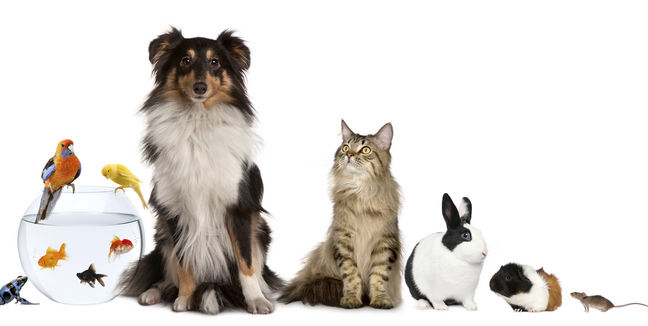
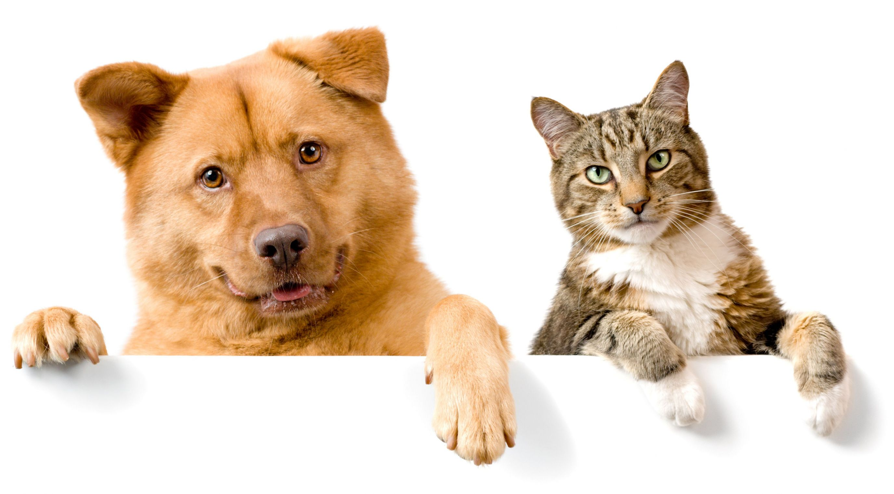
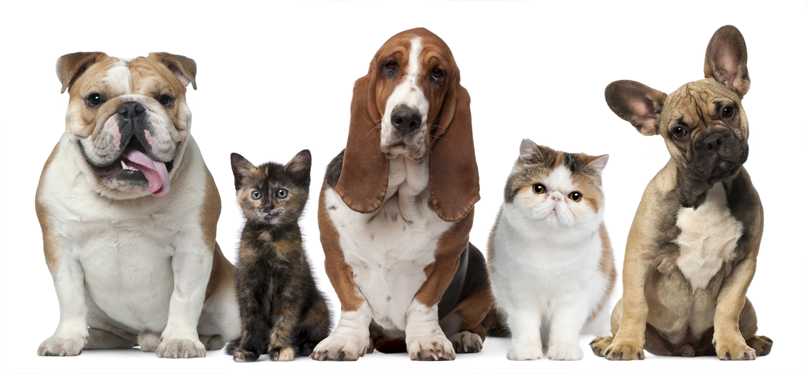

Menu
INICIO
QUIERO AYUDAR
ADOPTAR MASCOTA
PERDIDOS
SITIOS PARA MASCOTAS
FUNDACIONES



¡ ELLOS BUSCAN UN HOGAR, AMOR Y APOYO !
ORDENAR POR
Nuevos
Antiguos
Prioridad Alta
Gaturros
Perrunos
LUKAS
EDAD: 1 AÑO
CONÒCEME
LUKAS
EDAD: 1 AÑO
CONÒCEME
BABIDY
EDAD: 1 AÑO
CONÒCEME
VER OTRAS MASCOTAS PARA ADOPTAR